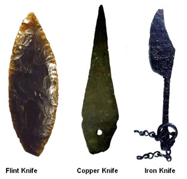
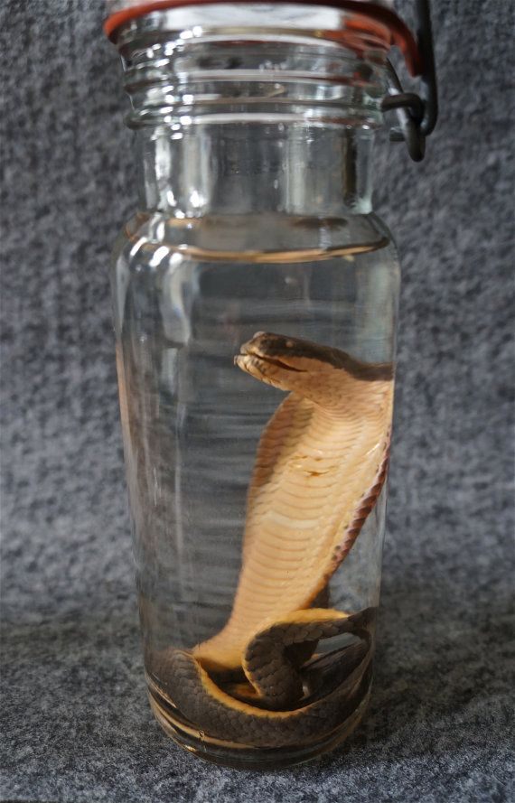

Art department

Monalisa painting
The Mona Lisa is a half-length portrait painting by the Italian Renaissance artist Leonardo da Vinci that has been described as "the best known, the most visited, the most written about, the most sung about, the most parodied work of art in the world".The Mona Lisa is also one of the most valuable paintings in the world. It holds the Guinness World Record for the highest known insurance valuation in history at $100 million in 1962,which is worth nearly $800 million in 2017.

Nature Painting
James E. Taylor titled his winning piece 'After Snowstorm, Sun on a January Morning.' It's a scene from his former home in Deerfield, Mass., and is a Gold Medal winner in the 2017 National Veterans Creative Arts Festival.
Archeology department

Harrapan pottery
Indus valley civilization has an ancient tradition of pottery making. Though the origin of pottery in India can be traced back to the much earlier neolithic age, with coarse handmade pottery - bowls, jars, vessels - in various colors such as red, orange, brown, black and cream. During the Indus Valley Civilization, there is proof of pottery being constructed in two ways, handmade and wheel-made

Ancient knife
The ancient knife is found during escaviations in 1860 and it is more than 500 years old.This indicates the style of living in the ancient times.
Science department

Aircraft model
Zoology department

Black cobra specimen
These are some of the items in the museum.....please visit the museum for more